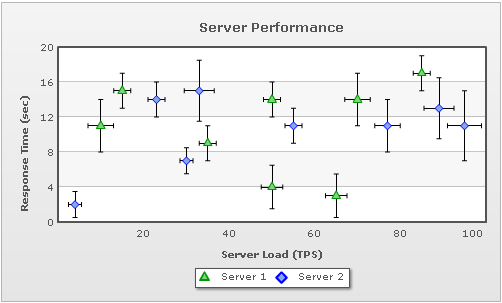

| Error Charts > Error Scatter > Creating a Simple Error Scatter Chart |
Let's create a simple error scatter chart that will display the comparison in performance of two fictional servers (Server 1 and Server 2). The chart will plot individual server load with respect to response time against x-axis and y-axis respectively as shown below.  The data for the above chart can be listed as under: <chart caption='Server Performance' xAxisName='Server Load (TPS)' yAxisName='Response Time (sec)' useHorizontalErrorBar='1'
halfHorizontalErrorBar='0' halfVerticalErrorBar='0' horizontalErrorBarColor='000000' verticalErrorBarColor='000000' >
<categories>
<category label='20' x='20' />
<category label='40' x='40' />
<category label='60' x='60' />
<category label='80' x='80' />
<category label='100' x='100' />
</categories>
<dataset seriesName='Server 1' color='009900' anchorRadius='5' anchorBgColor='7ED37E' >
<set y='11' x='10' errorValue='3' />
<set y='9' x='35' errorValue='2' />
<set y='4' x='50' errorValue='2.5' />
<set y='14' x='70' errorValue='3' />
<set y='14' x='50' errorValue='2' />
<set y='3' x='65' errorValue='2.5' />
<set y='17' x='85' errorValue='2' />
<set y='15' x='15' errorValue='2' />
</dataset>
<dataset seriesName='Server 2' color='0000FF' anchorRadius='4' anchorBgColor='85A5E9' >
<set y='14' x='23' errorValue='2'/>
<set y='15' x='33' errorValue='3.5'/>
<set y='11' x='77' errorValue='3'/>
<set y='13' x='89' errorValue='3.5'/>
<set y='11' x='95' errorValue='4'/>
<set y='2' x='4' errorValue='1.5'/>
<set y='7' x='30' errorValue='1.5'/>
<set y='11' x='55' errorValue='2'/>
</dataset>
</chart>
{
"chart":{
"caption":"Server Performance",
"xaxisname":"Server Load (TPS)",
"yaxisname":"Response Time (sec)",
"usehorizontalerrorbar":"1",
"halfhorizontalerrorbar":"0",
"halfverticalerrorbar":"0",
"horizontalerrorbarcolor":"000000",
"verticalerrorbarcolor":"000000"
},
"categories":[{
"category":[{
"label":"20",
"x":"20"
},
{
"label":"40",
"x":"40"
},
{
"label":"60",
"x":"60"
},
{
"label":"80",
"x":"80"
},
{
"label":"100",
"x":"100"
}
]
}
],
"dataset":[{
"seriesname":"Server 1",
"color":"009900",
"anchorradius":"5",
"anchorbgcolor":"7ED37E",
"data":[{
"y":"11",
"x":"10",
"errorvalue":"3"
},
{
"y":"9",
"x":"35",
"errorvalue":"2"
},
{
"y":"4",
"x":"50",
"errorvalue":"2.5"
},
{
"y":"14",
"x":"70",
"errorvalue":"3"
},
{
"y":"14",
"x":"50",
"errorvalue":"2"
},
{
"y":"3",
"x":"65",
"errorvalue":"2.5"
},
{
"y":"17",
"x":"85",
"errorvalue":"2"
},
{
"y":"15",
"x":"15",
"errorvalue":"2"
}
]
},
{
"seriesname":"Server 2",
"color":"0000FF",
"anchorradius":"4",
"anchorbgcolor":"85A5E9",
"data":[{
"y":"14",
"x":"23",
"errorvalue":"2"
},
{
"y":"15",
"x":"33",
"errorvalue":"3.5"
},
{
"y":"11",
"x":"77",
"errorvalue":"3"
},
{
"y":"13",
"x":"89",
"errorvalue":"3.5"
},
{
"y":"11",
"x":"95",
"errorvalue":"4"
},
{
"y":"2",
"x":"4",
"errorvalue":"1.5"
},
{
"y":"7",
"x":"30",
"errorvalue":"1.5"
},
{
"y":"11",
"x":"55",
"errorvalue":"2"
}
]
}
]
}
|
In the data above, we have:
You can also explicitly specify the amount of horizontal and vertical errors with the help of horizontalErrorValue and verticalErrorValue attributes respectively. Hence, a <set> element would look something as under: <set x='10' y='11' horizontalErrorValue='3' verticalErrorValue='4'/> This completes the explanation of our chart data. In the next page we will discuss the various configurable options available exclusively for error scatter charts. |